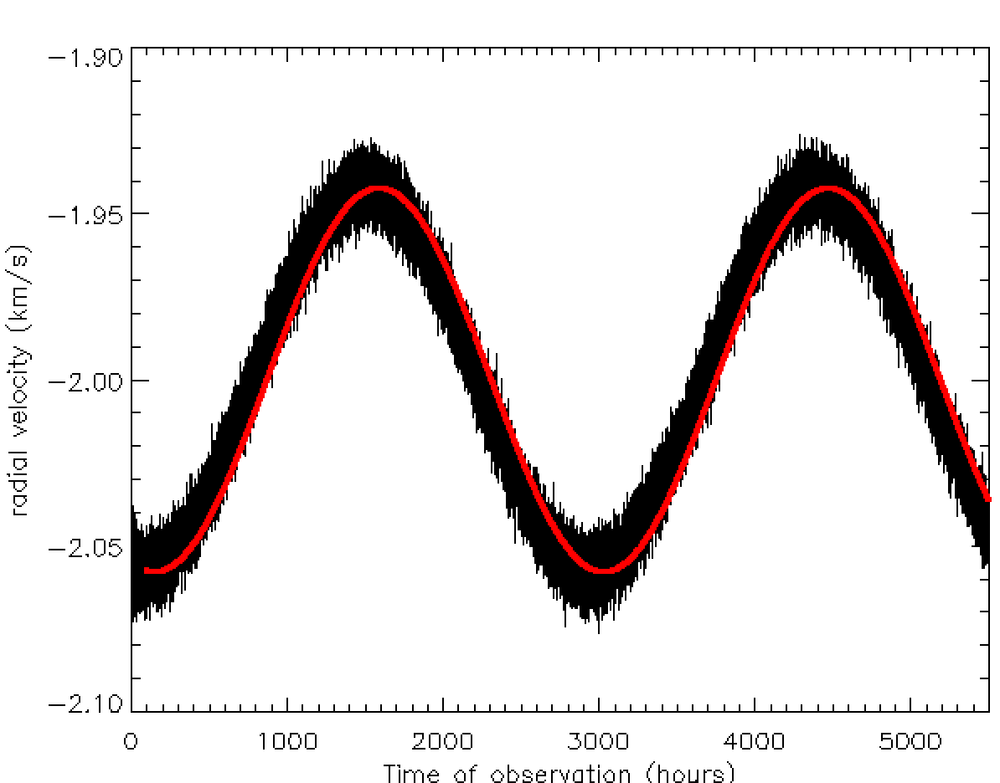

Forrige side🙂 🙁Tips til parameterestimering
Når du så har funnet den av de 203 kombinasjonene som gir de beste estimatene av v*, P og t0, så kan du tegne modellen vrmod(ti) og sammenlikne med de observerte dataene. Stemmer det godt overens? Det du spesielt skal tenke på her er om modellen din går midt inne i støyen, husk at støyen er Gaussisk slik at du forventer like mye utslag over som under kurven. Hva gjør du hvis du får et slikt resultat:

Passer denne modellkurven godt med dataene? Ligger modellkurven midt inne i støyen overalt? Hopper støyen like mye opp som ned overalt på kurven? Trykk her når du har svaret!